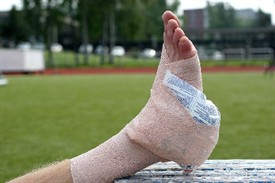
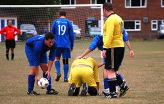
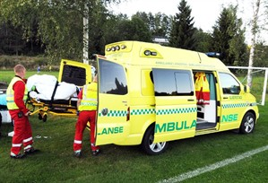
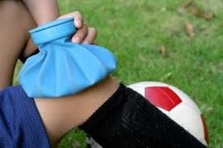
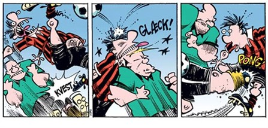
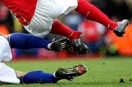
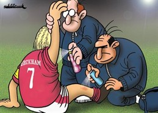
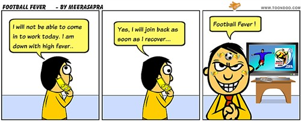
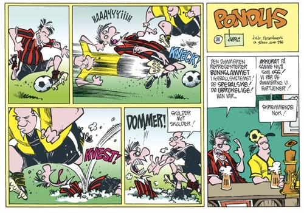

Skadeforebygging

Forebygging av fotballskader har vel ikke akkurat stått øverst på agendaen og preget sesongplanleggingen til oldboysen … vi er da ingen pingler heller!
Nå er det mange som ljuger på seg en idrettsskade for å slippe unna ting de ikke ønsker å gjøre, alternativt for å ha en unnskyldning for dårlig spill klar allerede før matchen starter … "ikke forvent stort av meg i dag, jeg har en lei strekk …", men det er litt skremmende når vi tar et overblikk på årets tilbakemeldinger i forkant av seriekamper og finner blant annet følgende:
Thomas D. - "Sliter med en strekk, men kommer om vi er få!"
Bønna - "Jeg er veldig usikker med kneet. Ser an i morgen."
Sverre - "Kraftig strekk"
Keegan - "Tåa holder ikke, kan stå i mål"
Klausen - "Falt hardt i trappa i dag, men håper ømheten gir seg til onsdag så jeg stiller"
Brenna - "Kommer ikke. Problemer med hofta"
Mads - "Jeg er skadet. Kommer ikke. Slet i stykker leddbånd i ankelen sist kamp. Foten ble dobbelt så stor, og mørkeblå! Trodde ett øyeblikk jeg hadde fått koldbrann i foten"
Thomas S. - "Kommer innom som tilskuer (med bag og lyskestrekk)"
Brøyn - "Avventer - har en vondt i vondten, og håper på bedring"
Nå har vi ikke tenkt til å kåre noen Norgesmester i lyskestrekk her og nå, men det ville jo være et skikkelig overtråkk i salaten om vi ikke informerte litt om de vanligste skadene våre tapre menn blir utsatt for … og samtidig svinge innom de litt mer sjeldne variantene som opptrer innimellom….

Leddbåndskader:
Strekk eller avrivning av leddbåndene på yttersiden eller innersiden av ankel eller kne. Skjer ofte i sammenheng med overtråkk, stempling, eller vridning av ankelen om du lander hardt i feil posisjon.
Dette hender oftest innendørs, når ballkåte FA-gamlinger ikke har beveget andre ting enn fjerkontroll-armen på en stund. Hjernen gir beskjed om en bråvending, kroppen starter bevegelsen mens foten sitter fast i gulvbelegget.
Strekk i lår, legg og lyske:
Muskelbrist som kommer av at muskelfibrene dras fra
hverandre ved overbelastning. Oppstår ofte ved rask spurt (lite
sannsynlig i FA oldboys), voldsom oppbremsing (les: kollisjon med
annen spiller), retningsforandring eller skudd. Skadene
forekommer oftere dersom man ikke varmer opp tilstrekkelig
(red. utheving). Slike skader er som regel kortvarige og trening
kan startes opp igjen etter noen få dager (tror ikke det nei).

Brudd:
Bruddskader kan ha mange årsaker, og kan oppstå i de fleste ben i underkroppen. Noen bruddskader skjer som følge av stempling, vridning eller andre støt. Noen brudd kan komme pga overbelastning over lang tid, også kalt stressbrudd. Det er ikke uvanlig med skadeavbrekk på over et halvt år når det gjelder bruddskader.
De eneste bruddene vi har registrert på FA-OB er brudd på spilleregler og brutte løfter om oppmøte og egentrening.
Meniskskade:
Det er to menisker i hvert kne - en på yttersiden og en på
innersiden. Disse fungerer som støtdempere i kneet. Ved en vridning
av kneet kan det oppstå rift av ulik alvorlighetsgrad i meniskene.
Skaden skjer ofte ved taklinger, finter eller dersom man får kneet
under seg. Som oftest må meniskskadene opereres innen få dager
etter skaden. Dette har vi også sluppet pent unna, ikke fordi det
mangler finte- eller taklingsvilje, mer fordi ting skjer i et rolig
tempo.

Korsbåndskade:
Denne skaden er en avrivning av fremre eller bakre korsbånd i kneet. Skjer ofte ved overstrekking eller rotasjon av kneet - veldig ofte i situasjoner der det ikke er kroppskontakt med andre, spesielt under finter, landinger eller taklinger der benet blir stående i bakken. En slik skade gjør virkelig vondt! Uten operasjon i etterkant kan kneet bli ustabilt, men nesten alle fotballspillere klarer å komme tilbake til nivået de var på før skaden.
Her er vi godt representert … i hvert fall ser vi ofte oldboys spillere som skader seg uten at det har vært kroppskontakt med i bildet. Å skulle "komme tilbake til nivået de var på før skaden" er vel egentlig ikke noe å hige etter…
Latinerskade:
Denne kan oppstå hvor som helst på kroppen, men som oftest på
leggen, og er tydeligvis forbundet med usannsynlige smerter. Skjer
nesten utelukkende i situasjoner der det er fordelaktig for den
skadde's lag, slik som innenfor motstanderens 16-meter eller dersom
motstander er i ferd med å få i gang en kontring. Rammer også
nesten utelukkende spillere fra Sør-Europa, derav skadens navn.
Behandlingsformer består av ispose, is-spray og oppmuntrende ord
fra lagets lege eller massør. Ikke så utbredt blant våre menn da
ingen tar hensyn til en som ligger og sutrer likevel …

TV-skaden:
Denne er ganske utbredt blant engelske spillere. Chelseas John Terry mistet i 2002 serieåpningen på grunn av en skade han pådro seg da han så tennis på TV. Han måtte operere kneet etter å ha vridd det da han snudde seg for å diskutere en episode med kompisen under tennis-kampen. Andre eksempler på TV-skaden er Rio Ferdinand (strakk en sene i kneet da han spilte PlayStation med beina på bordet), David Seaman (strekk da han skulle bøye seg etter fjernkontrollen) og Robbie Keane (skadet ankelen ved å tråkke på fjernkontrollen).
Vi FA-spillere innrømmer aldri en slik skade, til det er det for mange andre usannsynlige forklaringer man kan benytte.
Jubelskaden:
Paulo Diogo spilte i 2004 for den sveitsiske toppklubben Servette.
I vill jubel etter å ha scoret mot Schaffhausen løp han bak målet
og mot fansen for hyllest. På vei ned fra gjerdet som omringet
banen satt gifteringen hans fast i selve gjerdet, og ikke før han
var godt inne på banen igjen merket han at ytterste ledd på
fingeren var borte. Et annet eksempel på denne skadetypen var da
Steve Morrow scoret det avgjørende målet mot Sheffield Wednesday i
ligacupfinalen i 1993. Tony Adams løftet han i været for å feire,
fant ut at han var for tung, og mistet han i bakken. Fallet
resulterte i en brukket skulder. Frisk Asker feirer sine mål med
verdighet og unngår slike håpløse skader.

Reserveskaden:
Denne er nært beslektet med jubelskaden, men rammer de som
sliter benken. Hertha Berlins reservekeeper Gabor Kiraly pådro seg
i 2004 en delvis avrevet muskel da han feiret lagets andre mål mot
Eintrach Frankfurt. Han satt selvfølgelig på benken da uhellet
skjedde. Skaden satte han ut av spill i flere uker, men laget vant
3-1. Arsenals Perry Groves var innbytter i en kamp og jublet så mye
at han skallet hodet i taket på benken. Groves ble slått ut og
måtte få behandling av klubblegen. Våre benker er både myke og uten
tak, noe som sammen med det faktum at vi er lite impulsive gjør at
vi så langt har sluppet denne skadetypen. Et annet faktum er jo at
vi på bortekamper ikke har med overflødig mannskap som kan være
disponible for denne skaden.
Kjøkkenskaden:
Norges mest tørste spiller gjennom tidene, Claus
Lundekvam, pådro seg en skade da han sto på kjøkkenet en januardag
i 2000. Han fikk en skiveutglidning i ryggen da han skulle plukke
opp noe fra gulvet. Dave Beasant spilte i begynnelsen av 90-tallet
for Chelsea. Han mistet sesongåpningen da han mistet et glass
salatdressing på foten. Darren Bent, nå Tottenham, skar seg da han
skulle lage en sandwich. Barnsleys Darren Barnard skled stygt
hjemme på sitt eget kjøkken. Grunnen var at familiens puddel ikke
rakk å gå ut da den skulle tisse. Barnard misset hele fem måneder
av sesongen.
Jeg bare gjentar ovenfornevnte utsagn om at Frisk Askers djerve utvalgte har bedre fantasi enn at vi innrømmer slike skader.

Fylleskaden:
Engelsk fotball har en del av disse. Arsenal-stopper Tony Adams trynte i trappa på en nattklubb under en av sine mer flytende dager i 1993. Skaden krevde 29 sting. Gazza og ovenfornevnte Lundis har også hatt sine episoder, men den første vi kjenner som kombinerte alkohol og fotball på en imponerende måte var vel George Best som stadig vekk ble hentet på nachtspiel og fraktet til trening. Utallige spillere verden rundt (FA's inkludert) har vært rammet av dette i større eller mindre grad, og det var vel kun en liten stund at Drillo kunne disponere flere avholdsmenn i samme tropp (Fjøra, Bratseth osv.) men der tok Myggen ansvar og ballanserte det skjeve inntrykket. Bernt Hulsker var nylig en tur i fyllearresten og stiller vel neppe i Starts førsterekke på en stund.
Pappaskade:
At det er slitsomt å få unger vet jo de fleste oldboys, men at det er direkte farlig har man vært lykkelig uvitende om i alle år … David Batty, kjent som råtass i blant annet Leeds og Blackburn, var på vei tilbake fra skade da han ble truffet av sin egen ettåring på trehjulsykkel. Tottenhams Allan Nielsen led samme skjebne. Datteren stakk en finger rett i øyet på sin kjære pappa.

Idiotskade:
At man er god på fotballbanen er jo som kjent ikke ensbetydende med stor hjernekapasitet:
Dariuss Vassell, fikk i 2003 en kraftig blødning under den ene tåa si. Vassell ville bli kvitt blemma, fant frem en drill og begynte å borre ….
Lars Hirschfeld mistet en landskamp for Canada da han som RBK spiller brukte ostehøvelen på egen tommelfinger i stedet for på osten. Milan Rapaic mistet Hajduk Splits sesongstart etter at han på en flyplass stakk et boarding-card rett i sitt eget øye.
Sjeldne skadetyper
Det finnes et utall av skader som er vanskelige å sette i en bås
av forskjellige årsaker. Thomas Hafstad hadde f.eks et stygt møte
med en ergometersykkel under trening. Sammenstøtet resulterte i ti
sting i hodet og en kraftig trøkk i kneet. Den norske backen Svein
Grøndalen, måtte melde forfall til en landskamp på 70-tallet da han
på en joggetur kolliderte med en elg midt i skogen. Arsenal-spiss
Charlie George skulle klippe det altfor lange gresset i hagen. Det
gikk litt fort i svingene og «Champagne-Charlie» mistet den ene
stortåa under hagearbeidet. Ronaldo fikk en mikrofon i øyet da han
gjorde comeback for Corinthinas mens en Svensk fotballspiller fikk
et spyd i ryggen da han trente på en friidrettsarena.

Summa sumarum så er det mange farer som lurer der ute og det er ingen garanti for å gå skadefri gjennom sesongen selv om du legger skoene på hylla, så vi konkluderer vel med at det er like greit å brette opp ermene, snøre skoa og trå litt hardere til i taklingene slik at det er de andre som får skadene og ikke vi.
Skal vi likevel få komme med noen oppsummerende gode og skadeforebyggende råd så må det være å varme opp lenge og vel, unngå taklinger og fysisk nærkontakt, ingen raske spurter eller brå vendinger/finter, sitt rolig på benken og for all del ikke vis overdreven lykke ved scoring av mål. I tillegg kan vi råde FA-oldboys til å ligge unna kjøkkenet på hjemmebane, holde små barn på en armlengdes avstand, vend alltid boret på drillen bort fra egen kropp og ha til en hver tid oversikt over fjernkontrollen

Hilsen Kæpt'n
Kommentarer:
mange gode og kreative tips for unnasluntring her. Om jeg kommer til å bruke noen av de selv er vel heller tvilsomt, da må det i såfall være den med å kollidere med en elg under en joggetur midt i skogen..
Hehe. Dette vakke tasta sammen på et øyeblikks innfall:) Fra nå av er det ingen skader på meg.
Herlig! Og drar vi på tur og den ene har glemt astma- eller hjertemedisinen, låner han bare av en annen. Skulle vært gøy å se den komplette skadelista i laget, men den blir vel ikke mulig å kartlegge etter denne oppbyggelige artikkelen.
Orket ikke å lese gjennom hele, fikk en skade på netthinnen!
Artig! Kom meg inn på topplisten av skader ser jeg. Jeg er jo aldri skadet satt jeg og tenkte for meg selv, men husker jo leddbåndskade i foten, dne var vond. Og så knakk jeg jo ett ribbein en gang. Eller var det to? Og så har jeg slitt med betennelse i akilles flere sesonger, og så.........
Mye gjenkjennelig her. Jeg har jo for første gangen krysset for "skadet" i appen, som grunn for fravær på dagens kamp. Men jeg er helt sikker på at ALLE kunne se hvordan jeg ble påført århundrets legghøne mot Bærum på mandagen !?
Hyggelig å se at det er flere som heter Bønna her ;-) Min kommentar til lista; check!
FAOs sommerkrim - 29.04.2020 12:32
FAO med kupp på overgangsmarkedet! - 30.07.2019 19:24
Dag ansatt som fast lagleder på Frisk Asker M33 - 29.07.2019 12:28
Askermesterskapet i oldboysfotball - 07.05.2019 16:49
Frisk Asker OldGIRLS! - 05.04.2019 14:14
Know your enemy - 01.02.2019 16:46
Pass på liten og på stor - 21.09.2018 15:21
Nedrykk! - 14.09.2018 14:40
Lukten av gull! - 07.09.2018 22:27